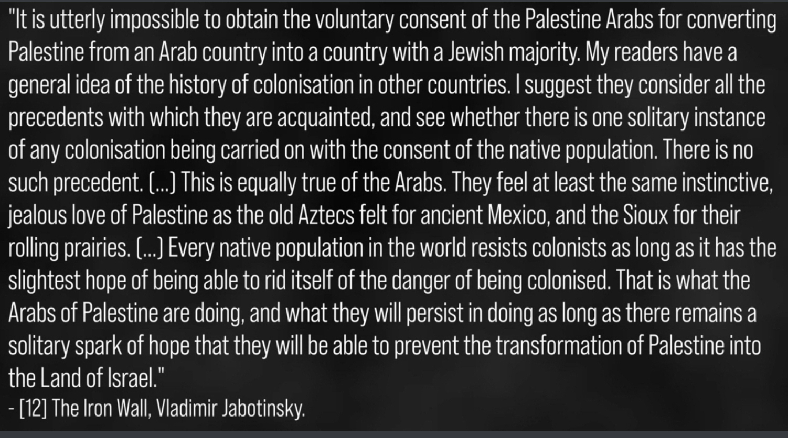
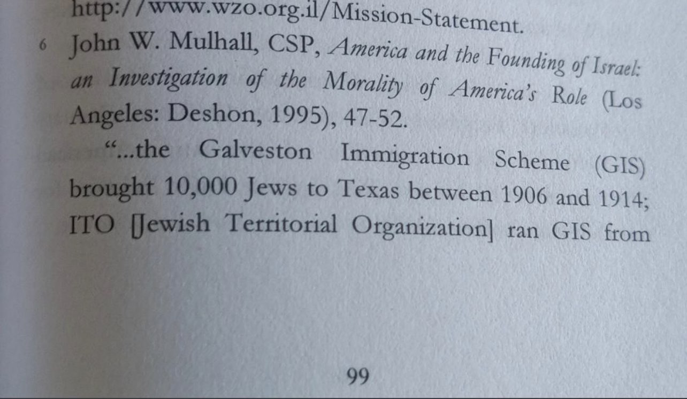
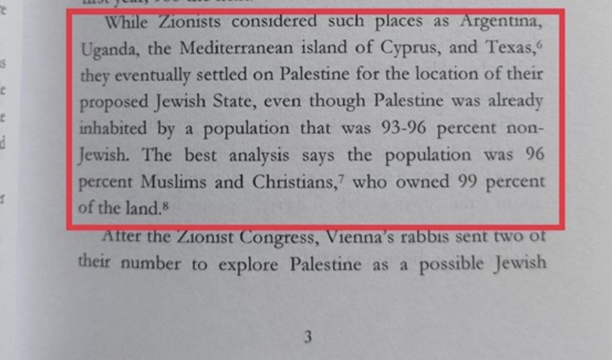

Theodor Herzl, the founder of Zionism, writing to Cecil Rhodes, a British colonial figure responsible for the colonisation of Rhodesia, Zambia, and much fo South Africa, where he killed, displaced, and dominated countless indigenous people
Herzl though this was something admirable, hence why he asked him for his blessing
Then we have Vladimir Jabotinsky, here is what he has to say about the existence of Israel:

Well there you have it, the fact is that to create an Israeli state, which is Zionism, is a colonising adventure
It‚Äôs funny how Zionists back then were VERY clear that they were colonizers, but nowadays they try to call themselves indigenous to avoid accountability for what they‚Äôve done üíÄüíÄ
And to address the notions of Israelis being “indigenous” to the land, the land of which they practically stole from Palestinians via perversion of Judaism through the invention of Zionism, which itself was inspired by contemporary colonial beliefs, organisations and countries at the time, and allied itself with their oppressors, anti-semites, to establish their own goals of oppressing Palestinians to establish a settler colonial state
The Hidden Truth of Zionism
In the early years of Zionism, Palestine was not even the first choice for settlement. Places like Argentina & Texas were considered as possible options. There was even the “Galveston Immigration Scheme” which tried to bring Jews to Galveston, TX. The plan ended at the end of WWI.


Speaking of WWI, the Zionists made efforts to sabotage peace between the European powers & Ottoman Empire. Using their political power, the Zionists were able to scuttle the peace talks. This angered US State Dept officials (the Zionists saw that as “anti-Semitism”).
Another historical fact that has been covered up:
There was cooperation between Hitler & some Zionist leaders. Yes, you read that right. In 1933, some Zionists made a deal with Hitler to allow Jews to emigrate to Palestine. In return, the Zionists wouldn't support a boycott against Germany.
 Not even Jews were safe from Zionist deception & terrorism. It is now well-known that most Jews in places like Iraq & Iran did not want to emigrate to Palestine. Iraq’s chief Rabbi even said that Iraqi Jews would be “forever against Zionism”. So, the Zionists decided to force them to emigrate by launching false flag terrorist attacks, which were of course blamed on "anti-semites". Jewish-Iraqi author Naeim Giladi wrote that "Jews killed Jews" to force a mass exodus to Palestine.
In fact, in the aftermath of WWII, a survey was done involving Jewish survivors. They were asked where they wanted to settle, and an overwhelming majority said they simply wanted to return to their homes in Europe and elsewhere. Only 15% wanted to go to Palestine.
It was because of results like these that Zionists used measures to force Jews to migrate to Palestine, even controlling orphanages so that children could not search for their relatives. This was done out of fear that they would want to go back to Europe rather than Palestine.
Zionists embraced terrorist tactics. They even had a plot to bomb London to assassinate the British foreign minister. This was in the aftermath of WWII when they waged a terror campaign against Britain, which was in control of Palestine (the “mandate” from the end of WWI). The chief planner, Baruch Korff (an Orthodox rabbi), also wanted to drop leaflets over Britain saying “We will carry the war to the very heart of the [British] Empire.” Civilian casualties weren't a concern. The plot was foiled.
Zionists also assassinated Count Folke Bernadotte, a Swedish UN mediator. This happened during the war in 1948. Bernadotte was trying to create a ceasefire. The Zionists killed him for that, even though Bernadotte had been instrumental in rescuing Jews from the Nazis.
And as stated before, not even Jews were safe from Zionism terrorism. Zionists once bombed a ship carrying Jewish refugees. This was part of a media effort to raise awareness for the "plight" of the refugees, most of whom were being forced to travel to Palestine in the first place.
In fact, one of the architects of the state of Israel, Menachem Begin, boasted about bringing terrorism not only to Palestine but to the whole world.
Historically, many Christians opposed Zionism. Despite modern American groups like CUFI (Christians United for Israel), many Christians in the early 20th-century actively opposed Zionism. These included pastors such as Harry Fosdick and Henry Coffin.
Not even Jews were safe from Zionist deception & terrorism. It is now well-known that most Jews in places like Iraq & Iran did not want to emigrate to Palestine. Iraq’s chief Rabbi even said that Iraqi Jews would be “forever against Zionism”. So, the Zionists decided to force them to emigrate by launching false flag terrorist attacks, which were of course blamed on "anti-semites". Jewish-Iraqi author Naeim Giladi wrote that "Jews killed Jews" to force a mass exodus to Palestine.
In fact, in the aftermath of WWII, a survey was done involving Jewish survivors. They were asked where they wanted to settle, and an overwhelming majority said they simply wanted to return to their homes in Europe and elsewhere. Only 15% wanted to go to Palestine.
It was because of results like these that Zionists used measures to force Jews to migrate to Palestine, even controlling orphanages so that children could not search for their relatives. This was done out of fear that they would want to go back to Europe rather than Palestine.
Zionists embraced terrorist tactics. They even had a plot to bomb London to assassinate the British foreign minister. This was in the aftermath of WWII when they waged a terror campaign against Britain, which was in control of Palestine (the “mandate” from the end of WWI). The chief planner, Baruch Korff (an Orthodox rabbi), also wanted to drop leaflets over Britain saying “We will carry the war to the very heart of the [British] Empire.” Civilian casualties weren't a concern. The plot was foiled.
Zionists also assassinated Count Folke Bernadotte, a Swedish UN mediator. This happened during the war in 1948. Bernadotte was trying to create a ceasefire. The Zionists killed him for that, even though Bernadotte had been instrumental in rescuing Jews from the Nazis.
And as stated before, not even Jews were safe from Zionism terrorism. Zionists once bombed a ship carrying Jewish refugees. This was part of a media effort to raise awareness for the "plight" of the refugees, most of whom were being forced to travel to Palestine in the first place.
In fact, one of the architects of the state of Israel, Menachem Begin, boasted about bringing terrorism not only to Palestine but to the whole world.
Historically, many Christians opposed Zionism. Despite modern American groups like CUFI (Christians United for Israel), many Christians in the early 20th-century actively opposed Zionism. These included pastors such as Harry Fosdick and Henry Coffin.
 Also, during the war, attacks by Zionists on Christian sites were documented, including the shelling of a convent that killed 8 people & wounded 120. Meanwhile, Christian observers had stated that Arab forces had largely abided by their promise to respect Christian sites.
And of course, massacres of Muslim Palestinians occurred. Infants & children were murdered & women were raped & killed. This included elderly women as well. In 1 incident, a pregnant woman was shot & then cut open with a butcher knife. An Israeli witness stated that the Zionists weren’t good at fighting but were “pretty good” as murderers.
Dozens of Palestinian villages were destroyed by the Zionists. One of the most well-known ones was Deir Yassin, where hundreds were killed. The perpetrators of these acts of genocide were groups like the Irgun, Stern Gang, and the Haganah (the precursor of the IDF).
And as if to add insult to injury, it is said that the Zionists offered “relief” for the refugees to the amount of 500 cases of ORANGES. Meanwhile, they had acquired over $400 million worth of Palestinian land (worth billions now).
The Logic of Zionism Makes No Sense
How Zionists are Seeking to Destroy Islam
A Zionist laments at Islam's ability to withstand the corrosive force of modernity, in contrast to other faiths.
Also, during the war, attacks by Zionists on Christian sites were documented, including the shelling of a convent that killed 8 people & wounded 120. Meanwhile, Christian observers had stated that Arab forces had largely abided by their promise to respect Christian sites.
And of course, massacres of Muslim Palestinians occurred. Infants & children were murdered & women were raped & killed. This included elderly women as well. In 1 incident, a pregnant woman was shot & then cut open with a butcher knife. An Israeli witness stated that the Zionists weren’t good at fighting but were “pretty good” as murderers.
Dozens of Palestinian villages were destroyed by the Zionists. One of the most well-known ones was Deir Yassin, where hundreds were killed. The perpetrators of these acts of genocide were groups like the Irgun, Stern Gang, and the Haganah (the precursor of the IDF).
And as if to add insult to injury, it is said that the Zionists offered “relief” for the refugees to the amount of 500 cases of ORANGES. Meanwhile, they had acquired over $400 million worth of Palestinian land (worth billions now).
The Logic of Zionism Makes No Sense
How Zionists are Seeking to Destroy Islam
A Zionist laments at Islam's ability to withstand the corrosive force of modernity, in contrast to other faiths.
 His strategy to counteract this:
This was written in 2001: much of this has been attempted.
Source: https://cis.org/sites/cis.org/files/articles/2001/back1301.pdf
All of this reminds me of this ayah of the Quran:
”You will surely find the most intense of the people in animosity toward the believers [to be] the Jews and those who associate others with Allāh; and you will find the nearest of them in affection to the believers those who say, "We are Christians." That is because among them are priests and monks and because they are not arrogant.”
(Quran 5:82)
His strategy to counteract this:
This was written in 2001: much of this has been attempted.
Source: https://cis.org/sites/cis.org/files/articles/2001/back1301.pdf
All of this reminds me of this ayah of the Quran:
”You will surely find the most intense of the people in animosity toward the believers [to be] the Jews and those who associate others with Allāh; and you will find the nearest of them in affection to the believers those who say, "We are Christians." That is because among them are priests and monks and because they are not arrogant.”
(Quran 5:82)